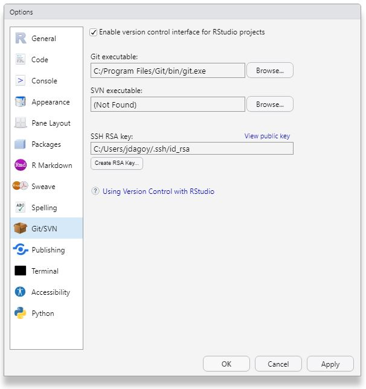
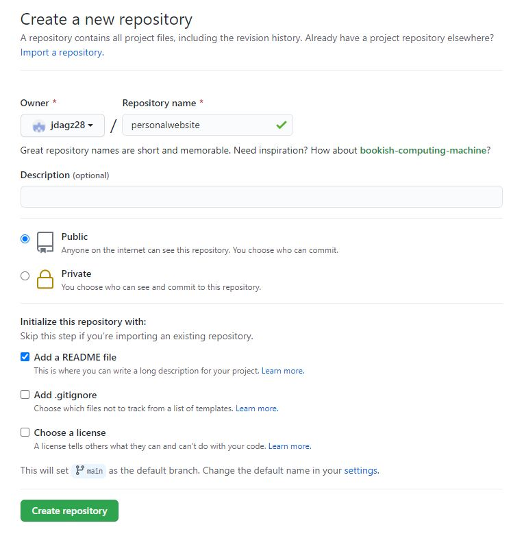
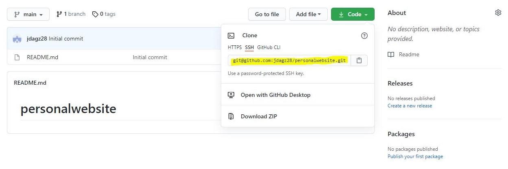
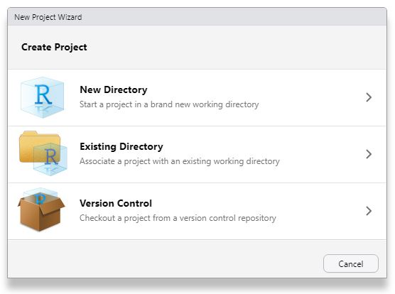
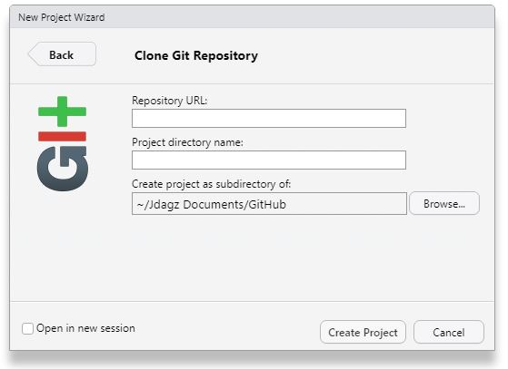

I have been thinking of creating a personal website focusing on research and academic work. I had previously developed websites (personal and for a small pest control company) using WordPress and had it hosted at eHost (now JustHost) or at Hostinger. At the time when I created those website, the two web hosting providers had the best deals and came with a free custom domain registration for a year.
I initially did not know it was possible to create a website in RStudio until I came across of the R package blogdown. So here is how I did this website.
Pre-requisites
- R and RStudio
- Git
- GitHub account
- Netlify account
- Optional: Your custom domain (cost varies depending on the domain name)
Installing Git
First you have to install Git to your computer in order to connect to your GitHub repository.
- Microsoft/Windows - download Git for Windows
- Linux - open the terminal window and run the following code:
sudo apt update
sudo apt upgrade
sudo apt install git
- Mac - install Homebrew and Git by running the following code:
/bin/bash -c "$(curl -fsSL https://raw.githubusercontent.com/Homebrew/install/HEAD/install.sh)"
brew install git
Setting up Git in RStudio
If you have installed R and RStudio before Git, it cannot locate the path of Git and you have to manually configure (in my case). If Git is installed correctly and Rstudio can find it, it can act as Graphical User Interface (GUI) front-end for Git. You do not have to do Git functions in the terminal.
To locate the PATH of Git, run the following in the terminal or Git Bash (after installing Git for Windows).
where git
which git
If Git is installed, take note of the path.
Launch RStudio, go to Tools > Global Options > Git/SVN. Locate the PATH of Git. Check the box of ‘Enable version control interface for RStudio projects’. It should look like this:
- Microsoft/Windows -
C:\Program Files\Git\cmd\git.exe
- Mac/Linux -
/usr/bin/git

Cick the create RSA key and copy the public key, which we will need to connect your GitHub account.
Setting up GitHub and creating your website repository
Now head to GitHub. Create an account if you do not have one.
Go to Settings > SSH and GPG keys and click the green New SSH key button and copy the RSA publi

Create a new repository. You can add a README file if you want to share your repository publicly.

Create repository. Click the green Code button and copy the highlighted part.

In RStudio, create a New Project. File > New Project > Version Control > Git.

Now, we can clone your Git repository. Supply the repository URL you copied from GitHub. Project directory name will automatically show the repository name. If you want to change the local location, click Browse and locate the folder where you want to store your project. Take note that you will note be moving this directory as it might create problems.

You are now ready to start you personal website project (Part II).